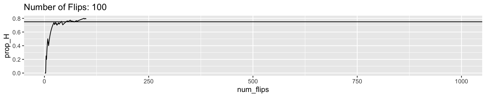
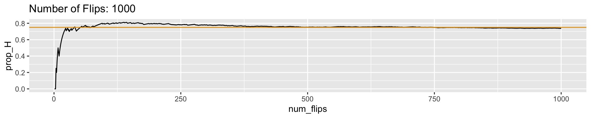

Stat465: Bayesian Analysis Lecture Notes
2024-01-26
Chapter 1 Introduction
Rare events: How many twins at Williams?
Some facts and general impressions: + ~2,000 Williams students. + US twin birth rate: 3/100 births ~ 5-6%.
Statistical method: Sample survey + Population: Williams students + Sample: Stat465 students
- We have sample size \(n_{s}=\) 20, with \(n_{twin}=\) 0 within sample.
1.0.1 What would a Frequentist do?
- Estimand: \(p\), the proportion of twins among Williams students
- Point estimate: sample proportion/MLE \(\hat{p}\)
## [1] 0The point estimate for Harvard twin proportion is 0. Make sense?
- Confidence interval: CI = Critival Value \(\times\) SE
- one-proportion z-interval?
- \(SE(\hat{p}) = \sqrt{\frac{\hat{p}\hat{q}}{n}}\)
- 95% CI: \(\hat{p} \pm 1.96 * SE(\hat{p})\)
## [1] 0 0with \(\hat{p}=\) 0, 95% CI for \(p\) covers only a single point, 0! Making sense?!
It seems Frequentist methods that we are mostly familiar with are failing us in this particular scenario. The major issue here is that the event (of being twin) of interest is rare, resulting in a population proportion too close to \(0\). With limited sample size and a too-rare event, the CLT for Wald-type/one proportion z-interval is no longer valid (remember the Success/Failure condition?:), thus giving such absurd results.
Naturally and often in cases as such, we may look for Bayesian to the rescue. So before getting into all the technical details, we are introducing Bayesian learning and Bayesian inference framework at the high level.
1.1 Bayesian learning
1.1.1 Process of Learning
Thinking about how you learn about any new concept, knowledge, skills, for example, when you learn about Williams College, when you learn about linear model for the first time, learn how to use R for the first time, or simply when you download and start to use Instagram or TikTok for the first time. It will generally follow the following process:
- Process of Learning:
- Pre-perception/belief \(\rightarrow\) Experiences/Observations \(\rightarrow\) Updated understanding
You may have heard about TikTok from your friends and thought it’s supposed to cool and fun, or maybe silly – these are your general pre-perception or belief on TikTok a priori. You decided to try it out: downloaded the app, created your own accounts, watched a few clips or live streamings, or maybe even created a few videos yourself. You may get addicted to it or just hate it – anyway, you formed your own opinions and updated your understanding of TikTok through your own observations and first-hand experience. And this common process of learning is just naturally aligned with the framework of Bayesian learning. Or more specifically, Bayesian learning puts the general process of learning in a theoretically principled model via mathematical and probabilistic formulation.
1.1.2 Bayesian learning
Generally speaking, Bayesian learning first utilizes probability distribution to describe or quantify one’s “belief” on a certain issue. This particularly involves quantification of the uncertainty as one’s belief about a certain issue is subjective, never accurate or exact. Particularly, when this belief or understanding is formed before the actual learning process, we call it prior distribution.
Next, the process of learning, i.e., information gaining, new opinion/understanding forming, or belief updating, can be considered as data being collected and observed, from a statistical perspective, which will be characterized through Bayes’ Theorem. After the learning process, the updated view/belief is then called posterior distribution. So we have the correspondence:
- Generic learning:
- Pre-perception/belief \(\rightarrow\) Experiences/Observations \(\rightarrow\) Updated understanding
- Bayesian learning:
- Prior distribution \(\rightarrow\) Data \(\rightarrow\) Posterior.
1.1.3 Essence of Statistics: Data, Model, Inference.
Before we formally introduce the Bayesian model, let’s review and clarify several key concepts in statistical inference.
- Data: \(X\), observations, what we have and work with.
- We usually use capitalized letter \(X_1,\dots, X_n\) to indicate random variables (r.v.s) modeling the randomness of (unrealized/general) sampled data
- Use lower-case \(x_1,\dots, x_n\) to indicate their realized/observed values
- Model: \[X|\theta \sim F(\theta).\] More specifically, also known as data-generating/generative/sampling model. It assumes or describes how data are generated or sampled from a population or an assumed infinite population (“super-population”, think about 10 realied coin flips from infinite flips as population).
The randomness or uncertainty of data sampled is characterized through probabilistic distributions \(F\), governed by some unknown parameters \(\theta\), which are often quantities of interests. We often use \(\Theta\) to indicate the parameter space, the collection of all possible values the parameters can take.
Meanwhile, there is one true value \(\theta^*\) for the parameter based on which the data are actually sampled/generated. Estimating the unknown \(\theta^*\) (with uncertainty characterized) is the ultimate goal of statistical inference.
Since > “All models are wrong but some are useful. – George Box”
we may assume some working models for the data generating process. And in contrary to the generative model, people may only focus on predictive model, i.e., the assumed working models purely for the purpose of prediction, which is common and the ultimate goal in Machine Learning (ML).
1.1.4 Bayesian statistics: A formal overview
More formally, Bayesian model or Bayesian inference framework share the following common framework, with three components:
- Prior distribution \(p(\theta)\) \(\rightarrow\) Data \(p(X|\theta)\) \(\rightarrow\) Posterior \(p(\theta|X)\).
- Prior Our prior belief, specifically the uncertainty on the value of \(\theta\) before seeing the data, is modeled by the prior distribution \(p(\theta)\) on the space \(\Theta\). This is the most significant difference compared to Frequentist approach: The parameter \(\theta\) is no longer considered fixed and unknown, as by Frequentist; it is a random variable, whose uncertainty is characterized by \(p(\theta)\).
In practice, there are many strategies to specify prior distribution, incorporating empirical knowledge (think about rarity of twins in the Williams twin example), historical data, domain expertise, or simply some subjective perceptions. After all, proability is subjective in Bayesian.
- Updating prior with data, or evidence Now, with data observed, our prior belief should be updated by the observed evidence. This process is rigorously characterized by principled probability theory, i.e., conditional distribuation and the Bayes’ Theorem. The updated uncertainty/belief on \(\theta\) is characterized though conditionl distribution \(p(\theta|X)\), i.e., the distribution of \(\theta\) given that we have observed data \(X\) (conditioning \(X\)).
\[ p(\theta|X) =\frac{p(\theta)p(X|\theta)}{p(X)} \]
- Posterior \(p(\theta|X)\), the conditinal distribution of \(\theta\) given observed data \(X\), is also known as the posterior distribution. \(p(\theta|X)\) contains all the information we have about \(\theta\) given observed data, and describes our posterior belief/uncertainty on potential values of \(\theta\). From a pure Bayesian perspective, our inference is already done. However, to make Bayesian inference more interpretable and comparable to Frequentists, all other common inference quantities, such as point estimator, confidence intervals, and predictions, could be derived from the posterior \(p(\theta|X)\).
1.2 Appendix A: Bayes’ Theorem
Bayes’ Theorem \[ p(A|B) = \frac{p(B|A)p(A)}{p(B)} = \frac{p(B|A)p(A)}{p(B|A)p(A) + p(B|A^C)p(A^C)} \] Mechanically, Bayes’ Theorem helps us to invert the conditions of two events. Philosophically, it’s about conditioning on and interpreting the evidence we have observed and updating our perceived uncertainty through conditional probability.
1.2.1 Example: Prosecutor’s Fallacy
Suppose a defendant in a criminal trial is either \(G\), guilty, or \(I\), innocent. In addition, suppose blood sample \(B\) has found on the crime scene, which is consistent with the defendant. The prosecutor’s argument is that How should we judge this argument, in the sense of probability theory?
- Translating to probability language
- “If there is only 1% people in population (innocent) who has this blood type, then the probability that the defendant is innocent is 1%.”
- If \(p(B|I)=0.01\), then \(p(I|B)=0.01\).
- Our goal is to verify or dispute this: assume this is true, see what conclusion it can lead to.
- Consider the prior of guilty without evidence, \(p(G)\): using Bayes’ Theorem \[ \begin{aligned} p(G|B) &= \frac{p(G)p(B|G)}{p(B)}\\ &= \frac{p(G)p(B|G)}{p(G)p(B|G) + p(I)p(B|I)}\\ &= \frac{p(G)\cdot 1}{p(G)\cdot 1 + p(I)\cdot 0.01}\\ &= \frac{p(G)\cdot 1}{p(G)\cdot 1 + (1-p(G))\cdot 0.01} \end{aligned} \]
Also know that \[ p(G|B)=1-p(I|B)=0.99 \]
- Solve for \(p(G)\), we have the prior \(p(G)\approx 0.497\), which means,
- Inconsistent with presumption of innocence.
1.2.2 Example: Prosecutor’s Fallacy (ct’d)
Suppose there are \(500,000\) people in the town, so to be consistent with presumption of innocence, \(p(G)=1/500,000\).
- The chance that defendant is guilty given the evidence:
\[ \begin{aligned} p(G|B) &= \frac{p(G)p(B|G)}{p(G)p(B|G) + p(I)p(B|I)}\\ &= \frac{p(G)\cdot 1}{p(G)\cdot 1 + (1-p(G))\cdot 0.01}\\ &\approx 1/5,000. \end{aligned} \]
1.3 Discussion: What is Probability?
1.3.1 Classic: Counting equally likely outcomes
Let \(A\) be the event of interest and \(S\) be the entire sample space. In the classic (naive) view of probability, the chance of \(A\) is given by \[ p(A) = \frac{|A|}{|S|}, \] where \(|\cdot|\) indicates the number of equally likely outcomes in the event. For example, consider the chance of getting a Head from a coin flip: \(A = \{H\}\) and \(S = \{H,T\}\), then \(p(A) = \frac{1}{2}\).
1.3.2 Frequentist: Frequency in the long run
This classic view of probability is straightforward, but only works when all the possible outcomes are equally. It is limited in that a minor change in the scenario as simple as a coin would disrupt the framework. This gives the popularity of the Frequentist viewpoint, which understands probability as frequency of an event in the long run, i.e., : \[ P(A) = lim_{n\rightarrow \infty} \frac{n_A}{n}, \] where \(n_A\) is the frequency of event \(A\) occurring in \(n\) independent trials. For example, suppose the coin is biased towards Head, Frequentist believes the

Most of the statistical inference methods you have learned so far are based on this Frequentist view. The randomness in our inference is completely from the data in repeated samples. That’s also why when we interpret CI or p-values, we emphasize they are about “what happens in repeated sampling” or based on a “sampling distribution”.
1.3.3 Bayesian: Subjective probability
This view of probability as frequency of repeated random events is intuitive but less practical. For example, when we say that the effective rate of a drug is 80%, Frequentists are thinking about applying this drug to millions of people and the proportion of effectiveness should be about 80%, which could never actually take place in real life. In our daily life, when we incur probability statement such as calling tomorrow’s chance of raining is 50/50, we are not actually thinking about infinite parallel universes where half of them will rain and halfwill shine. Instead, it is more about a quantification of our uncertainty on a random event that we are uncertain about. Such perspective, characterizing anything uncertain with a (more or less subjective) probability or distribution is Bayesian. So without explicit knowing it, we are already thinking Bayesian every day!
Bayesian or Frequentist, they are mostly different views on what is proabability, but they all follow the same probability theories (remember Kolmogorov’s Axioms?) we are all familiar with. Different views of probability may have given rise to different schools of statistics. But you don’t have to be a (dogmatic) Bayesian to appreciate and apply Bayesian thinking and methodology. Through the course, we will keep comparing Bayesian approaches to their Frequentist counterparts, drawing their connections and sometimes even reaching a unification.